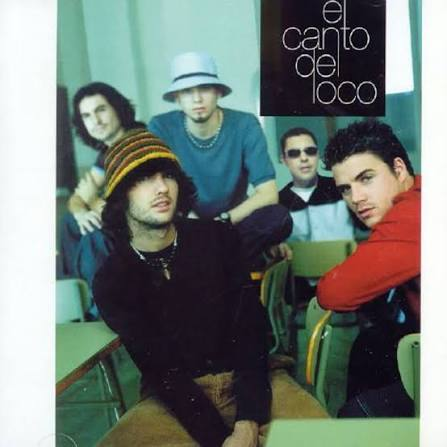
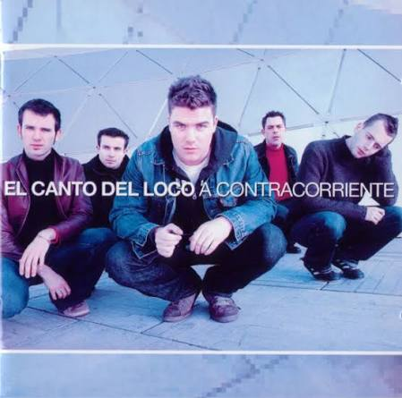
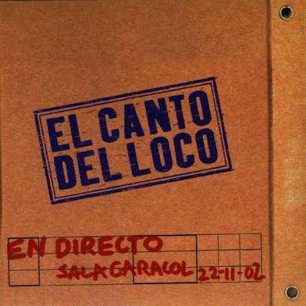
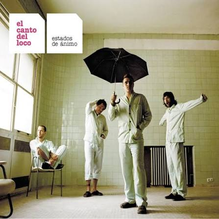
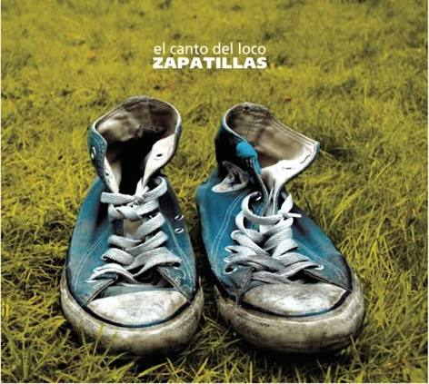
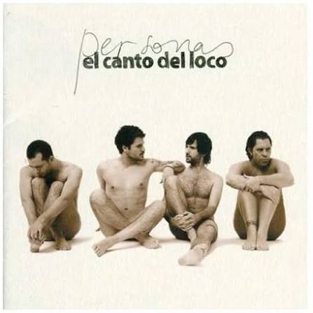
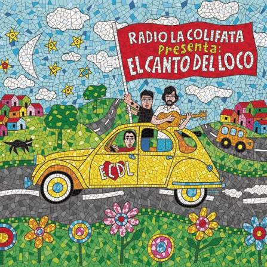

El canto del loco
Año de publicación: 2000
- Pequeñita
- Llueve en mi
- Eres un canalla
- Pasión
- Traidora
- He vuelto a caer
- Sin Mitad
- No quiero nada
- El Agricultor
- Y si el miedo
- Busco la vida
- Vivir asi es morir de amor
El Canto del Loco fue una banda de pop-rock española formada en 1994 en Madrid. La banda estaba compuesta por Dani Martín (voz), David Otero (guitarra y coros), Chema Ruiz (bajo) y Jandro Velázquez (batería). Su estilo musical combinaba elementos del pop, rock y punk, y se caracterizaba por sus letras emotivas y pegajosas.

Año de publicación: 2000

Año de publicación: 2002

Año de publicación: 2003

Año de publicación: 2003

Año de publicación: 2005

Año de publicación: 2008
Año de publicación: 2009

Año de publicación: 2009